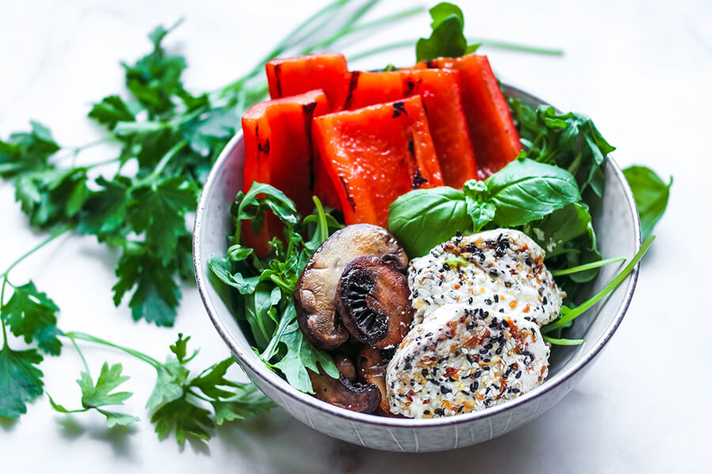

Home
Veggie and Fried Goat Cheese Salad

Description
This delicious salad hardly needs a dressing.
Ingredients
- 1 medium red bell pepper, seeds removed & cut into 8 pieces
- ½ cup baby portobello mushrooms, sliced
- 4 ounces goat cheese, cut into 4 ½ in thick medallions
- 4 cups arugula, divided between two bowls
- 2 tablespoons poppy seeds
- 2 tablespoons sesame seeds
- 1 teaspoon onion flakes
- 1 teaspoon garlic flakes
- 1 tablespoon olive oil (lemon flavored is particularly great!)
Steps
- Combine the poppy and sesame seeds, onion, and garlic flakes in a small dish.
- Coat each piece of goat cheese on both sides. Plate and place in the refrigerator until you are ready to fry the cheese.
- Prepare a skillet with nonstick spray and heat to medium. Char the peppers and mushrooms on both sides, just until the pieces begin to darken and the pepper softens. Add to the bowls of arugula.
- Place the cold goat cheese in the skillet and fry on each side for about 30 seconds. This melts quickly so be gentle as you flip each piece!
- Add the cheese to the salad and drizzle with oil. Serve warm!